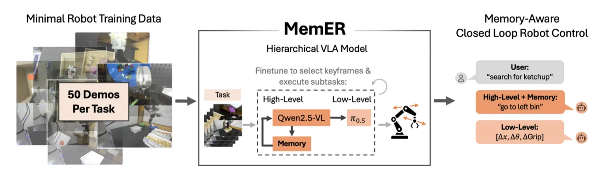
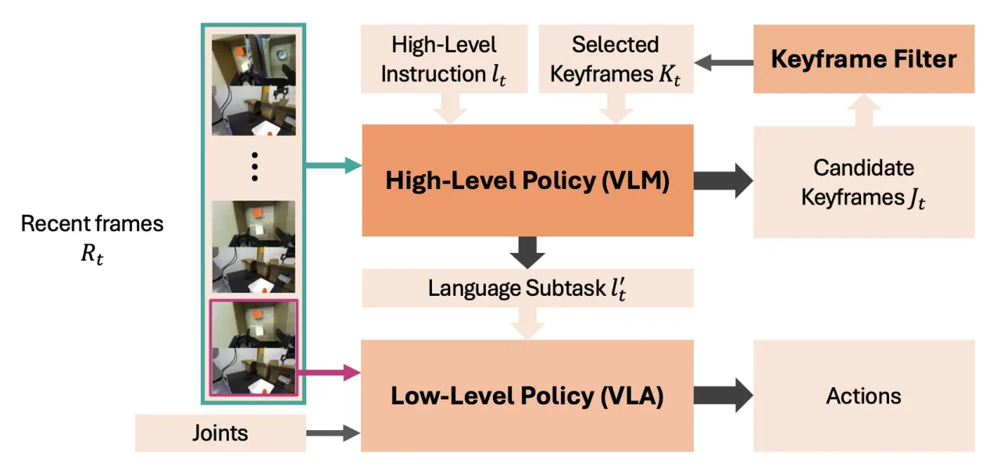
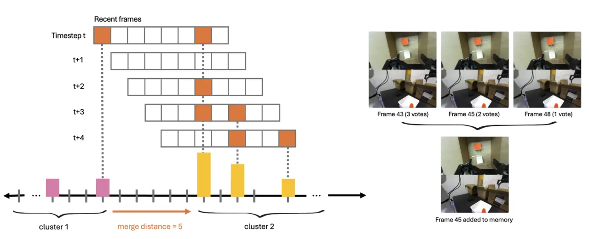
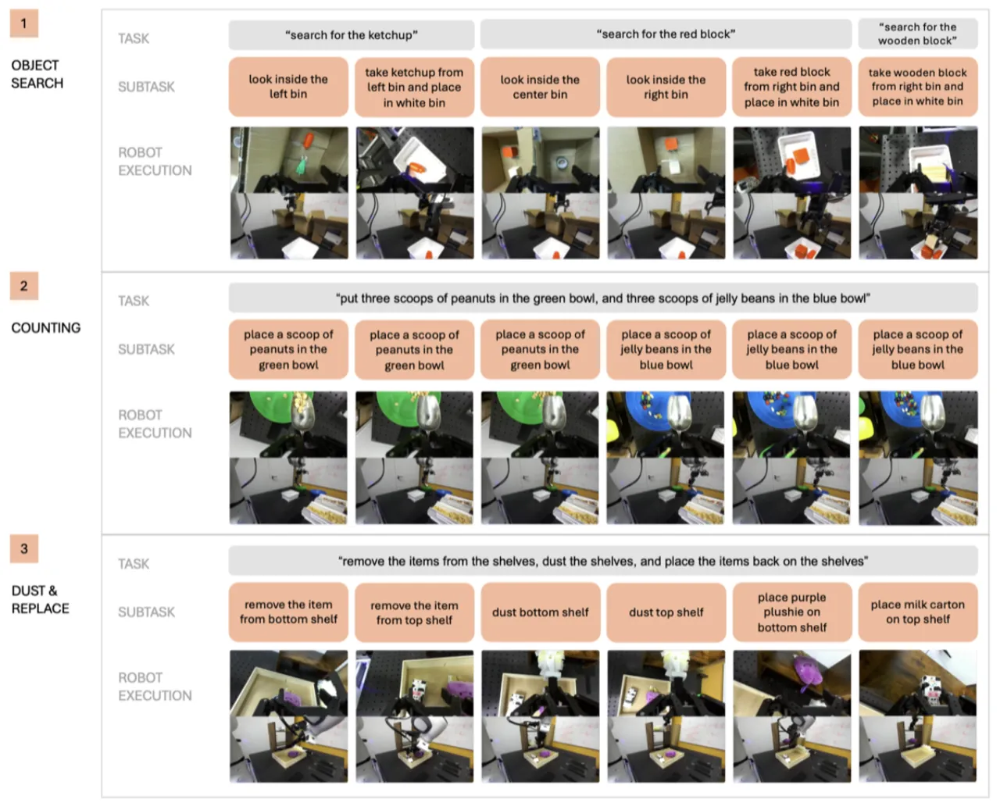

当前机器人策略普遍缺乏长时程记忆能力——直接输入长观测序列既计算昂贵，又在分布偏移下容易过拟合。 MemER 提出一个分层策略框架：high-level policy 负责从历史观测中筛选并跟踪任务相关关键帧（keyframes）， 再将这些关键帧与最近帧一并传给 low-level VLA 执行具体动作。 在三个需要数分钟记忆的真实长时程操作任务上，MemER 大幅超越无记忆及朴素长上下文基线，并接近人类 high-level oracle 性能。
现有的机器人操作策略虽然在泛化能力上取得了显著进展，但普遍存在一个关键缺陷——缺乏长时程记忆。 人类执行任务时会自然地依赖记忆（如记住花生酱放在哪个柜子里），机器人却做不到。
"Naively conditioning on long observation histories is computationally expensive and brittle under covariate shift, while indiscriminate subsampling of history leads to irrelevant or redundant information."
现有的两类解决方向各有缺陷：

MemER 将策略分解为两层：high-level policy（基于 Qwen2.5-VL-7B-Instruct 微调）负责在每个推理步骤筛选关键帧并预测当前子任务（language subtask）； low-level policy（基于 π₀.₅ 微调）根据子任务指令执行具体的关节控制动作。 两个策略异步运行：π_h 约 1Hz，π_l 约 2Hz。

在每个时刻 t，high-level policy 接收三部分输入：
为避免记忆爆炸，MemER 使用一个轻量的在线聚类算法对历次候选帧进行整合。 具体地，将所有候选帧的时间戳汇总为 G_{0:t}，对距离不超过 d 帧的索引进行合并， 形成若干不相交簇（cluster）。每个簇取中位帧作为代表性关键帧。 重复提名的帧会获得更高权重（中位数偏向提名集中处），确保记忆的代表性。 该流程在单台 CPU 上毫秒级完成，不引入额外模型，支持流式实时更新。

为训练 high-level policy，论文采用半自动标注流程： 首先提取相邻子任务边界帧作为候选，再由人工为每类子任务制定统一规则（取第一帧/最后帧/不取）， 最终自动应用于所有演示，每段子任务至多产生一个关键帧标注。 仅需 50 条长时程演示及 10–15 条干预演示即可完成微调。
纯微调后的 high-level policy 对低层策略出现的重试/冻结行为鲁棒性下降（训练数据全为专家轨迹，缺乏失败恢复样本）。 受 Anonymous (2025) 启发，论文将预训练权重 θ_pre 与微调权重 θ_ft 进行线性插值： θ = (1−α)·θ_pre + α·θ_ft，其中 α=0.8。 实验表明 model merging 在所有任务上均能维持或提升性能。
实验在真实 Franka 机械臂（DROID 设置，ZED 第三视角相机 + 腕部 miniZED 相机，分辨率 320×180）上开展， 针对三个需要分钟级记忆的长时程任务各进行 20 次试验。

所有方法共享同一 low-level policy，仅 high-level policy 的输入上下文不同：
| 方法 | Object Search 取出次数 ↑ / 最优路径 ↑ |
Counting 多/少勺数 ↓ |
Dust & Replace 成功指标合计 /4 ↑ |
|---|---|---|---|
| MemER（本文） | 59 / 57 | 1 | 77/80 |
| No History（无记忆） | 32 / 25 | 61 | 21/80 |
| Short History（N=8 帧） | 38 / 31 | 26 | 51/80 |
| Long History（N=32 帧） | 47 / 41 | 12 | 46/80 |
| Human HL（人类上界） | 58 / 58 | 0 | 75/80 |
Long History（32帧，≈16秒记忆）仍比 MemER 平均差 34%，且推理延迟接近1秒上限。 MemER 在所有三项任务上成功率均超过 90%，主要失败来源是 low-level policy 执行失误，而非记忆错误。
由于 GPT-5 和 Gemini Robotics–ER 1.5 的 API 延迟高达 10–15 秒，无法满足闭环部署的实时要求（<1秒）， 论文设计了离线轨迹准确率评测（trajectory accuracy）和子任务切换准确率（boundary accuracy）。
| 方法 | Object Search Traj / Boundary |
Counting Traj / Boundary |
Dust & Replace Traj / Boundary |
|---|---|---|---|
| MemER（本文） | 0.80 / 0.76 | 0.67 / 0.65 | 0.87 / 0.86 |
| GPT-5 | 0.15 / 0.16 | 0.43 / 0.47 | 0.67 / 0.63 |
| Gemini Robotics–ER 1.5 | 0.21 / 0.23 | 0.13 / 0.14 | 0.19 / 0.22 |
零样本 API VLM 的主要失败原因：提名过多无用候选帧，无法识别哪些帧真正重要， 导致子任务预测不准确——说明机器人感知特定的关键帧识别能力需要专门微调。
论文对比了三种记忆表示方式：① 视觉关键帧（MemER）、② 文本子任务（Short History + Text）、③ 图文混合（MemER + Text）。 结果表明，纯视觉关键帧记忆性能最佳。加入文本后，模型往往过度依赖文本 token，忽视视觉输入； 文本记忆在策略重试/冻结导致轨迹偏离时尤为脆弱，无法捕获物体位置等关键视觉细节（如 Object Search 中已搜索过的 bin）。
在所有三项任务上，将预训练权重（α=0.8）与微调权重融合均能维持或提升性能， 尤其在低层策略出现重试行为时有明显帮助，印证了线性权重插值对抗过拟合的有效性。
MemER 持续累积信息性关键帧，但目前缺乏在关键帧数量过多时主动丢弃的机制。 对于需要数小时记忆的任务，这一问题可能导致上下文溢出。 论文指出："enabling the high-level policy to reason about which keyframes to not only add but also delete for modifiable long-term memory is an exciting direction for future work."
π_h 约 1Hz、π_l 约 2Hz 的异步调度已接近可容忍的延迟上限， 无法支持非常高频率的控制（如精细装配任务）。 论文提出 improved model caching 和更好的 tokenization 是进一步降低推理延迟的方向。
当前 MemER 的记忆完全基于图像帧，未纳入触觉、音频等其它感知模态。 论文认为"incorporating other sensory modalities such as tactile or audio is a promising extension."
所有实验均在 Franka 手臂 + DROID 台架上进行，未测试移动机器人或跨房间任务。 论文指出扩展到"mobile manipulation and multi-room tasks, where memory must interleave spatial mapping with episodic recall"是使系统更接近人类记忆能力的重要一步。